30天鐵人賽介紹 AWS 雲端世界 - 4: AWS 服務和資源的帳戶權限掌控者 - Identify Access Management(IAM)
What is IAM
Identify Access Management(IAM)，是 AWS 用來提供各種 AWS 旗下服務權限管控的服務。假設我們想讓我們註冊的帳戶封鎖使用某些 AWS 功能，都是透過這邊做額外的權限管控。IAM 提供了以下的功能:
- 中央控管我們的 AWS 帳戶
- 分享我們 AWS 帳戶下的使用權
- 可透過此處提高或下降我們的操作權(ex: grant to Admin)
- 可以整合不同的帳戶聯繫至該 AWS 帳戶下做操作(ex: Active Directory, Facebook, Linkedin etc…)
- 可以提供兩步驟驗證(multifactor authentication)
- 可以提供額外的臨時使用者帳戶與密碼做暫時使用
- 可以設定 AWS 帳戶的密碼更新規範
- 可以整合其他不同的 AWS 服務權限(最重要的功能)
Users, groups, policies and roles.
在開始介紹介面與使用前，我們先快速的對 IAM 上面的幾個名詞有個基本認識
User
終端使用者，可以將這此視為最後登入的使用帳戶。
Groups
群組，可以建立一個特定的團體並設定一組權限給一群特定的終端使用者。
Roles
角色，可以透過角色來將 AWS 的服務與其他資源的存取權限設定至該腳色上。
Policies
策略方針，可以透過此方式來制定一組設定檔來定義一至多個個權限做集體的管控。
以上四者的關係我們可以參考一下下圖。
而使用者與團體的關係簡單來講就是個體或是群體的差異而已：
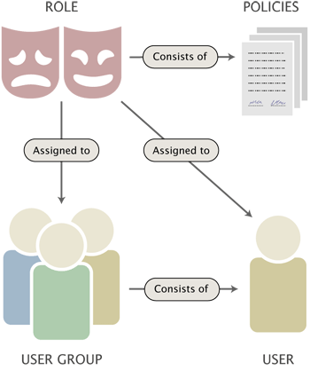
Hands on Lab
接下來我們來實際使用一下 IAM 這項服務。
首先我們必須先登入 AWS Console
在完成登入後即會將下面的內容，右上角我們可以切換不同的服務 Region。記得在使用服務前都要稍微住一下當前使用的區域是不是你所設想的，避免白花或是多花錢。
而接下來我們中間的查詢區塊直接輸入IAM 點選該服務，也可以透過左上角的 Services 選單進入詳細服務內容，並在 Security, Identity & Compliance 分類下找到 IAM 服務。
而當我們登入 IAM 後你可以發現右上發的區域會改變成 Global，當你看到這樣的顯示就表示當前服務是不分區域的，不管你從哪一個區域點選進來做設定都會反應並提供給其他區域的服務做參考。
而這邊我們可以看到一個有一個 sign-in link，預設是配發一組隨機序號，但我們也可以自己設定不重複的DNS名稱方便我們記憶。
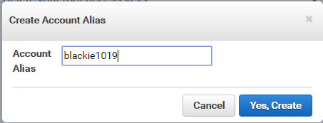
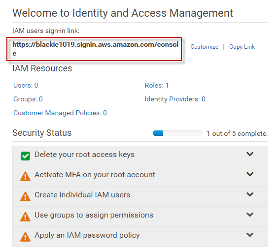
而當我們將此連結輸入到瀏覽器並前往該網頁會出現下面的登入畫面：
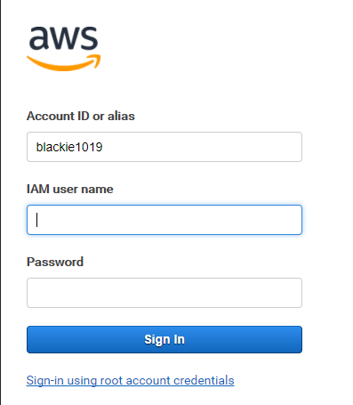
Multifactor Authentication for Root Account
接著這邊可以看到頁面下方有一個 Active MFA on your root account 的建議。
由於 AWS 這邊基於安全考量，不建議我們每次都用 root account 做服務的開通與設定，應該是透過配發指定服務的 user account 來做特定服務的管理，去減少使用 root account，所以他同時也建議我們透過兩步驟驗證(multifactor authentication)安全性。
接著我們就點選頁面連結後依序操作，這邊我們使用虛擬的 MFA device(需要透過手機安裝對應的app)，可參考AWS - Multi-Factor Authentication
Android
iPhone
Windows Phone
Blackberry
這邊提及一下，AWS 不會針對使用 MFA 收取額外的費用。所以為了確保帳戶的安全還是建議每位使用者先將這個設定好吧。
首先依序按下頁面的指示後會看到出現一個QRCode的畫面。

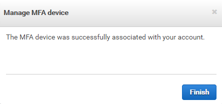
接著拿起我們剛剛下載的手機並打開對應的 App 選擇新增後掃描：
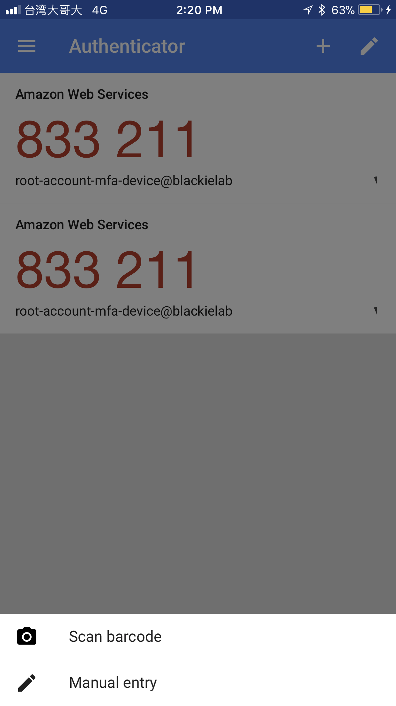
然後瀏覽器會跳轉要我們輸入兩次六位數的 pincode，這邊注意，輸入時要兼隔一下秒數，等產生新一組後在放置 pincode 2的輸入框內即可。
Create new user
接著快速示範如何新增一個使用者並給予這個使用者一個群組與設定對應的權限與角色。
輸入使用者名字與密碼後，記得勾選 access type:
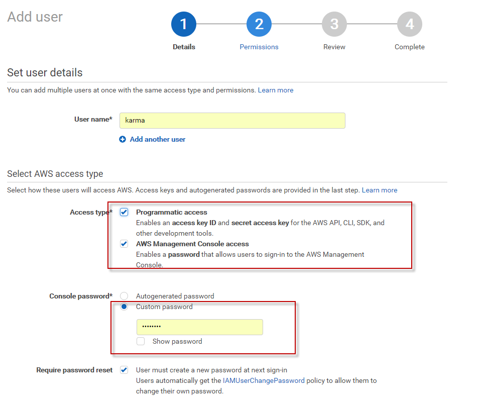
接著我們為此新使用者建立一個新群組並配發對應的角色權限：
這邊可以在搜尋視窗內過濾角色名稱，點選進去後可以看到該角色當前的每項服務權限，而我們也可切換至JSON檔案格式瀏覽。如果這邊沒有找到適合的角色我們也可以自行新增一個角色給當前使用者：
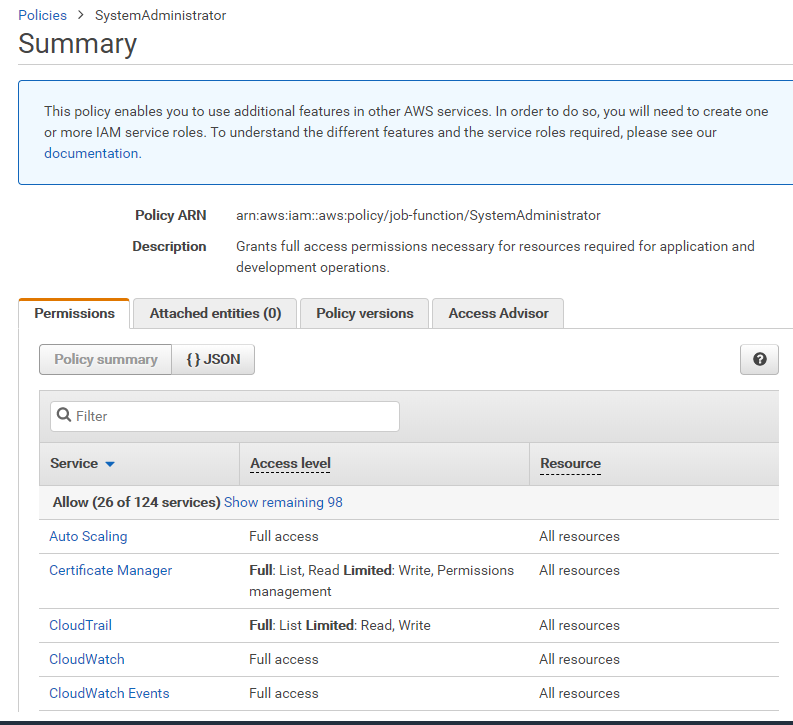
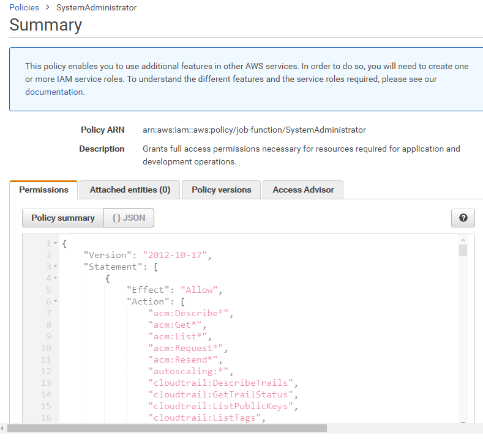
這邊後面展示，先將使用者設定為 AdministratorAccess 的角色：
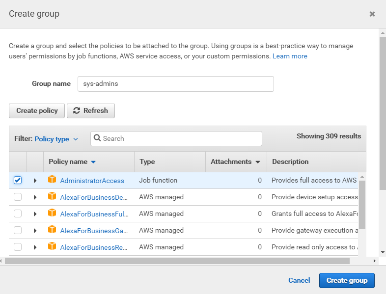
最後確認當前設定無誤後按下即完成使用者新增並建置出新的群組，這邊需要注意一下每個新的使用者在新增時所產生的 Secret Access Keys 只會在這個時候顯示，之後是無法查詢的所以一定要好好記下來。
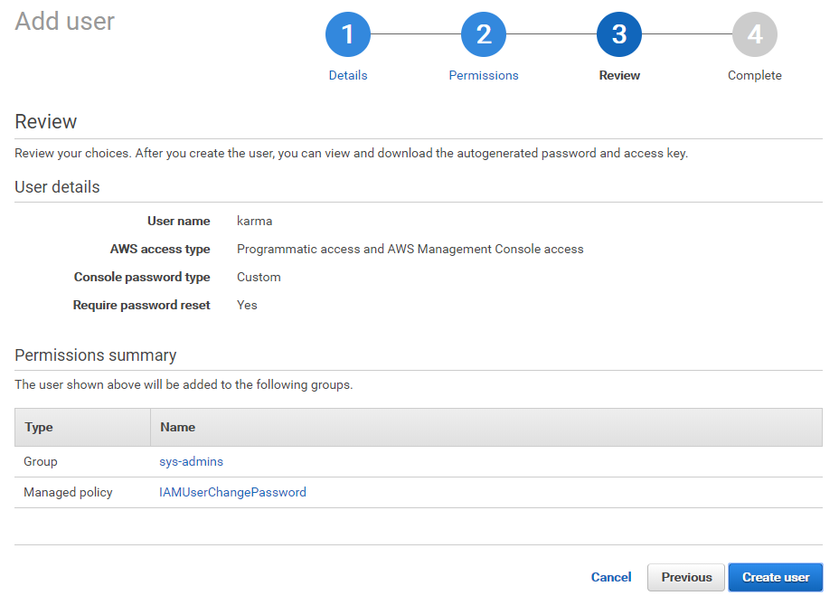
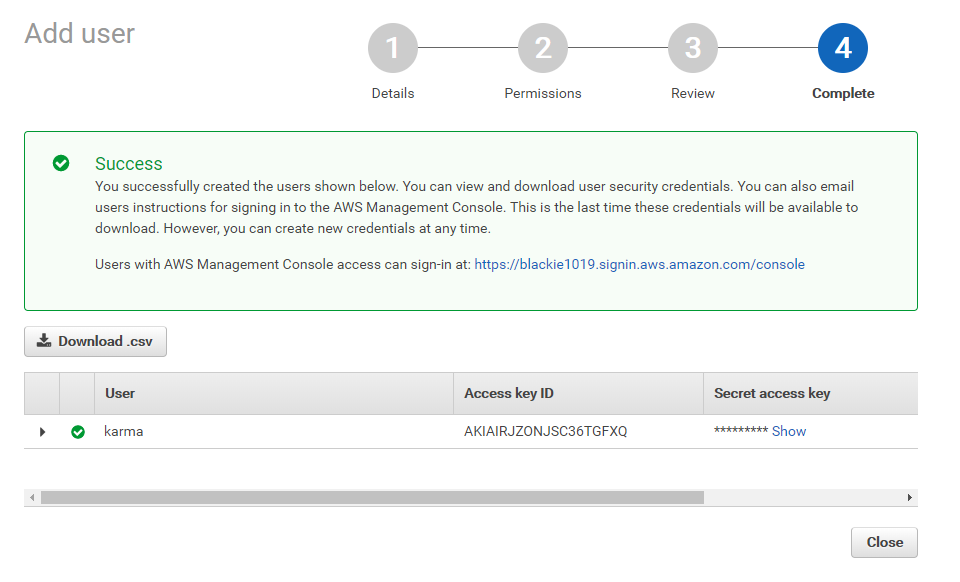
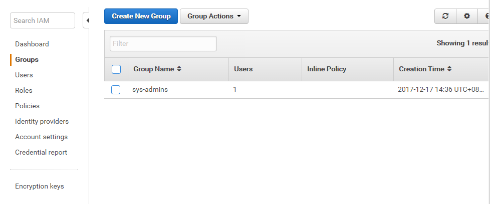
如果你真的遺忘了 Secret Access Keys 只好回到該使用者介面重新產生一組，而他也會將之前的 Access Key ID 置換成當前這組新的。
而這組Access Key ID和Secret Access Keys與使用者帳號密碼最大的不同在於使用的時機。
當我們今天透過 AWS SDK 或是 CLI 工具作為登入時則必須透過Access Key ID和Secret Access Keys才可以。
Password Policy
最後當我們回到 IAM 的服務首頁只剩下最後一步驟，設定密碼的策略。
這邊可以選擇密碼的複雜度與更新頻率，甚至設定MFA給這些使用者帳號。
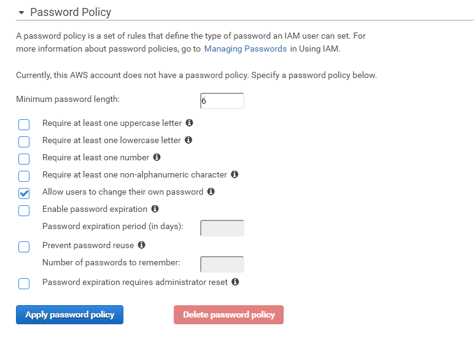
當都完成後可以看到五個步驟都顯示綠燈，我們則可以重新回去一開始的Sign-on網址並輸入剛剛新增的使用者作登入：
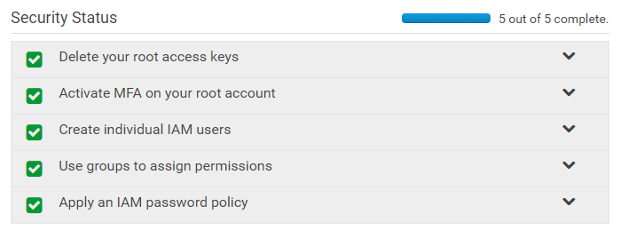
這邊會要求第一次登入需要修改密碼
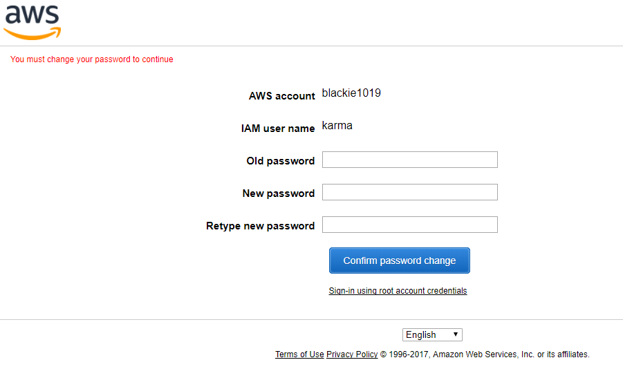
而當成功登入後即可看到下面登入時的資訊會有使用者名稱與當前帳戶名稱